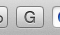

Overview
GOLDMine is a browser extension designed to get course data from UCSB's GOLD system. This allows students to leverage their courses (enrolled in, past and presently) in new ways. Currently the extension is in active development for the Safari and Chrome browsers.
Download
You can download the Safari extension here.
The Chrome extension will be available soon.
Features
GOLDMine's current features include:
- Get course data from GOLD
- Stores multiple quarters, once a quarter schedule is loaded it will be saved along with all the other quarters that are saved
- Allow students to quickly look up professors on RateMyProfessors
- Allow students to view each classroom on an interactive map of UCSB
- Allow students to view the websites of departments they are taking classes in
- Get final exam data from GOLD (for current quarter)
Help
Here are a few things you should know about using GOLDMine:
- You can open the extension by clicking the G icon in the Safari toolbar (the bar where the back/forward buttons and URL field are). The button looks like this:

- When you open GOLDMine for the first time, it won't have any course data. To get course data you need to load a class schedule page in GOLD. GOLDMine will automatically get the information about that quarter from the page. After logging in to GOLD, you can open your class schedule by clicking on the button shown below (at the top of the navigation list):
- GOLDMine can only store information about quarters you have loaded in GOLD. To load a schedule for a different quarter, use the quarter dropdown on the schedule page (in the top left corner of the schedule):
- Once multiple quarters of data are stored, you can look at a different quarter in GOLDMine by using the quarter selection dropdown. This is at the top of the GOLDMine window, and is shown below:
- That's a quick overview of how to use GOLDMine. Make sure to load all your quarters so they will all be stored.
Some common problems and questions and their solutions are listed below:
- Q: GOLDMine doesn't show my courses, just a message about loading my schedule.
A: GOLDMine needs to get course information from GOLD. Load your Class Schedule in GOLD and GOLDMine will store the information.
- Q: Final exam information is only showing up for the most recent quarter.
A: GOLD only shows final exams for the most recent quarter, so that's all the information GOLDMine can get.